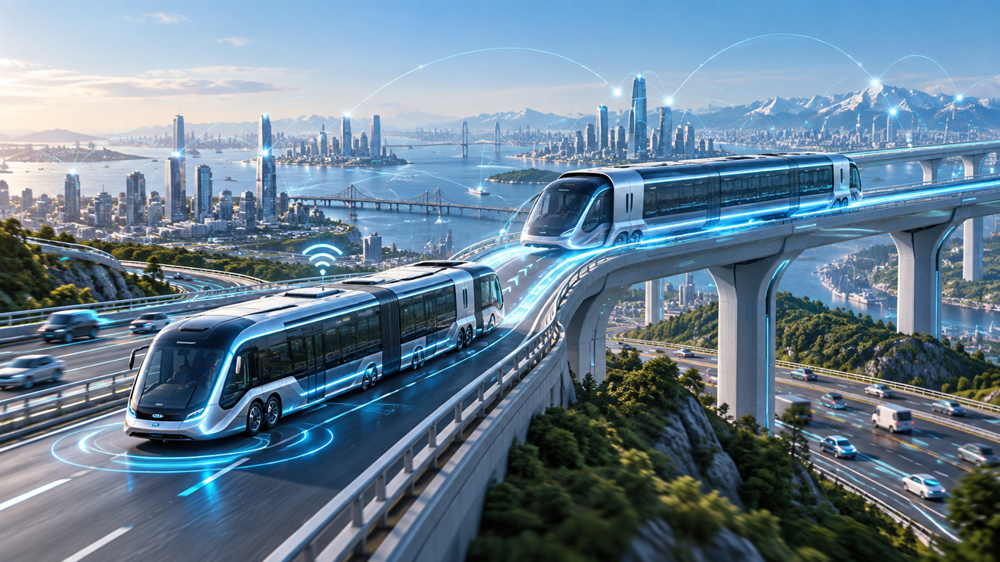
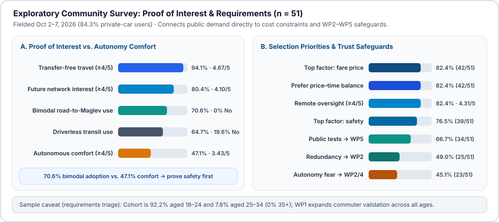
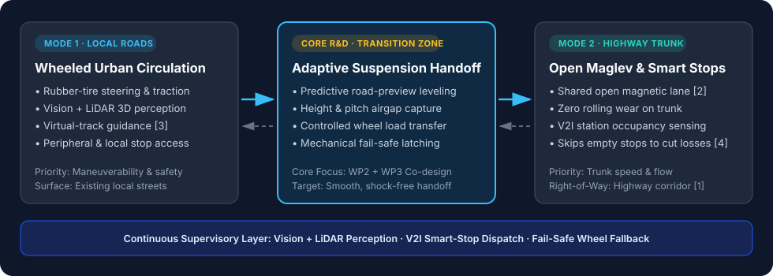
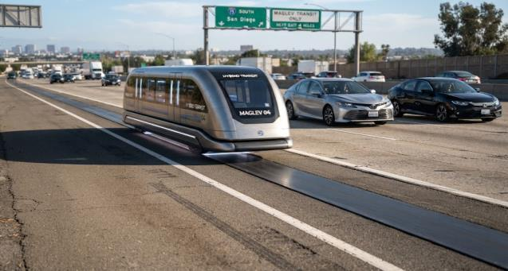
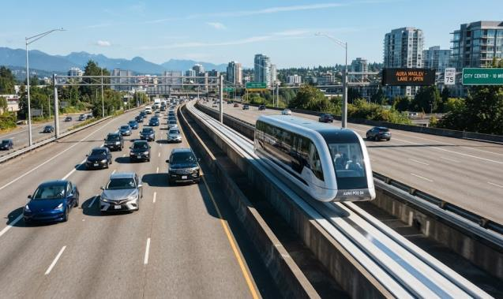
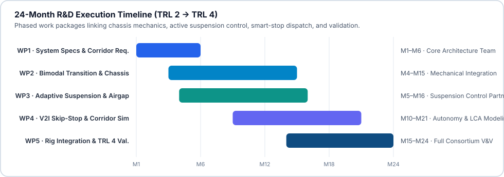

Corridor Footprint
How can regional public transport cut door-to-door travel time and carbon emissions without building expensive, land-intensive new railways?
Bridging autonomous local street driving and contactless highway magnetic levitation (Maglev) in a single vehicle, delivering regional speed and local access without building dedicated rail corridors.

MagLink · Scientific & Engineering R&D Proposal
Regional bus corridors face a structural cost trap: driver labor exceeds 40% of operating expenditure [20], forcing low off-peak frequencies, slow stop-and-go urban speeds (~13 km/h [3]), and forced transfers (rejected by 94.1% of our n = 51 exploratory survey). Over a 20-year R&D horizon, pairing mature autonomous V2I skip-stop feeders [3, 21, 22] with a highway Maglev trunk cuts OPEX per vehicle-hour, multiplies bus frequency at fixed public subsidy, and beats private-car door-to-door time without building urban steel rail [1, 17].
Interactive 20-Year Corridor Estimator · 70 km Trunk + 6 km Urban Feeder
Hover, focus, or tap any bar for the component breakdown. Parametric model grounded in [3, 17, 20–22] via scripts/corridor_estimator.py · View Equations & Research Assumptions (§3.2 / §4.1) →
How can regional public transport cut door-to-door travel time and carbon emissions without building expensive, land-intensive new railways?
How can land vehicles overcome road speed and rolling-wear bottlenecks while managing aerodynamic drag and levitation power demands?
How can a fast trunk network serve low-density peripheral communities on demand without penalizing through-passengers?
How can existing motorway rights-of-way be safely and economically adapted for next-generation public mobility?
| Within Consortium R&D Scope | Assumed 20-Year External Ecosystem |
|---|---|
| Bimodal vehicle chassis & wheel-to-Maglev mechanical transition | Standardized open highway Maglev lane shared by transit & freight |
| Predictive adaptive suspension for road comfort & airgap capture | Camera + LiDAR multimodal fusion & rule-based highway ODD guardrails [8–11] |
| Vehicle-to-Infrastructure (V2I) smart-stop occupancy & skip-stop logic | Existing highway civil right-of-way (guideway retrofit cost still accounted for) |
| Corridor performance, energy & Life-Cycle Assessment (LCA) benchmarking | — |
An exploratory consultation fielded ahead of technical specification (51 responses, Oct 2026) tested public interest and safety thresholds for bimodal road-to-levitation transit. Following a structured requirements triage, respondent priorities map directly to our cost boundaries and WP2–WP5 safeguards, while committing WP1 to wider demographic sampling (this exploratory cohort is 92.2% aged 18–24 and 84.3% regular car users).

Transfer-free travel scored 4.67 / 5 (94.1% ≥ 4), with 70.6% open to riding a bimodal road-to-Maglev vehicle (0% outright No) and 80.4% supporting future network deployment.
Fare price (82.4%) and safety (76.5%) top all selection criteria, while 82.4% favor a price–time balance, backing highway right-of-way reuse over high-cost dedicated rail.
With autonomous failure as the top fear (45.1%), trust relies on public testing (66.7%), redundancy (49.0%), and remote human oversight (4.31 / 5), directly anchoring WP2, WP4, and WP5.
Each vehicle operates across two specialized locomotion regimes connected by an active suspension transition core.
Uses rubber-tire steering on local roads, building on Autonomous-Rail Rapid Transit (ART) guidance [3] and Vision + LiDAR sensor fusion [10, 11]. Because unmonitored urban edge cases still constrain standalone autonomous buses [8, 9], MagLink treats road autonomy as an external capability paired with structured ODD guardrails.
Predictive road-preview Model Predictive Control (MPC) active suspension levels the chassis over uneven pavement [5–7], aligns height and pitch within millimeter tolerances at the guideway entry, and smoothly transfers vertical load between tires and magnetic bogies [14, 15].
Travels contactless on a shared highway magnetic lane using EMS/EDS principles [2, 12, 13]. Smart stations detect waiting passengers and signal approaching vehicles via V2I, skipping empty stops to avoid unnecessary deceleration and re-acceleration energy losses [4].



A 24-month research and development plan advancing MagLink from Technology Readiness Level (TRL) 2 to TRL 4 through five coordinated Work Packages (WPs) designed for a scientific R&D funding program.
Reduce operating cost per vehicle-hour via 1:10 remote oversight [20] to unlock ~1.46× active fleet capacity at fixed public budget.
Combine fleet scaling with V2I skip-stop dwell cuts [21, 22] and 220 km/h Maglev cruise to shrink 30 min headways to ~9.9 min.
Demonstrate repeatable road-to-guideway latching with WP3 predictive airgap capture [5–7] and passive mechanical wheel fallback.
Benchmark guideway retrofit CapEx [17] and embodied CO2 [1] against car modal shift across regional Portuguese demand bands.
| Work Package | Timeline | Lead Role | Key Technical Deliverables |
|---|---|---|---|
| WP1 · System Specs & Corridor Req. | M1–M6 | Core Architecture Team | Functional requirements, highway curve-radius speed envelope, vehicle mass & power budget. |
| WP2 · Bimodal Transition & Chassis | M4–M15 | Mechanical Integration Team | Wheel-retraction & bogie-latching CAD, structural load-transfer FEA, fail-safe fallback mechanism. |
| WP3 · Adaptive Suspension & Airgap | M5–M16 | Suspensão Ativa Preditiva (Partner) | Road-preview vertical/pitch MPC controller [5–7], airgap capture tolerance loop, multi-body dynamics simulation. |
| WP4 · V2I Skip-Stop & Corridor LCA | M10–M21 | Autonomy & Systems Analysis | Station occupancy V2I dispatch model, skip-stop energy/time simulator, comparative LCA vs. LRT & bus. |
| WP5 · Sub-Scale Rig & TRL 4 Validation | M15–M24 | Full Consortium | Benchtop/sub-scale transition test rig, fault-injection safety trials, engineering & lifecycle feasibility report. |

Members: Matilde Romano, Eduardo Duarte, Guilherme Lopes, Lucas Fonseca, Diogo Pedrosa, Gabriel Ribeiro (Mechanical Engineering, Univ. of Aveiro).
Leads WP1, WP2, and WP4 corridor benchmarking, integrating structural chassis layout, bimodal handoff mechanics, and V2I skip-stop modeling.
Members: André Pinto, David Sousa, Dinis Mano, Filipe Guimarães, João Martins, Rodrigo Osório (Mechanical Engineering, Univ. of Aveiro) · Partner Portal.
Leads WP3 active chassis leveling and predictive damping, coupling computer-vision 3D road topography with speed-dependent MPC for independent 4-wheel pre-impact actuation to stabilize ride quality and capture Maglev airgap alignment during transition [5–7].
Highway lane dependency: if open-lane standardization lags, the transition rig and active suspension controls remain transferable to rail, ART, and bus platforms.
Mode-lock failure: passive mechanical fallback onto wheels.
Mass penalty: shared structural subframe and sub-scale mass budgeting.
V2I spoofing: authenticated station-to-vehicle messaging [4].
Targets urban-to-regional corridors (competing directly with Light Rail Transit and tram systems) by delivering street-level maneuverability without laying steel rails across city centers [3].
Accounts for both highway guideway retrofit emissions and aerodynamic/levitation power at speed, relying on smart skip-stop operation and modal shift from private cars for net lifecycle cuts [1, 4].
Ensures passive fail-safe fallback to conventional tires, cybersecurity resilience for V2I stop triggers, and barrier-free automated boarding at regional smart stations [4].
Publishes sub-scale rig specifications, simulation datasets, and LCA methodology via this public portal, peer-reviewed engineering papers, and regional transit stakeholder workshops.
5. Literature & Technical Evidence
Explore the complete literature analysis matrix, Maglev deployment and switching reality checks, automated bus OPEX & V2I skip-stop studies, autonomous transit AI safety boundaries, and predictive active suspension controls underpinning our 24-month R&D plan.